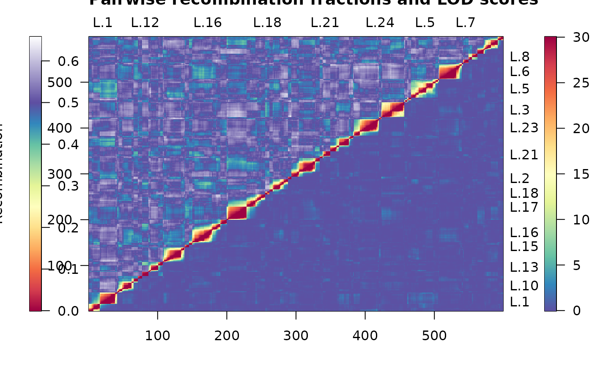

Heat map of the estimated pairwise recombination fractions and LOD linkage between markers.
heatMap.RdHeat map of the estimated pairwise recombination fractions and LOD
linkage between markers that provides extended functionality of Bromans
qtl package plotRF function.
Usage
heatMap(x, chr, mark, what = c("both", "lod", "rf"), lmax = 12,
rmin = 0, markDiagonal = FALSE, color =
rev(colorRampPalette(brewer.pal(11,"Spectral"))(256)), ...)Arguments
- x
A
"cross"object generated from the qtl package.- chr
A character string of linkage group names to subset the cross object.
- mark
An argument to subset linkage groups further into marker subsets. This can be a single numerical vector of markers positions which will subset all linkage groups in the same manner. Or it may be a list of numerical vectors named by the linkage group names with which to subset the linkage groups separately.
- what
A character string of either
"lod","rf"or"both". If"lod"only pairwise LOD scores between markers are plotted. If"rf"then only pairwise recombination fractions between markers are plotted. If"both"then both are plotted with LOD on the lower triangle and recombination in the upper triangle. This is the default (see Details).- lmax
The threshold LOD score to implemented. Scores above this threshold will be plotted at the same colour.
- rmin
The threshold recombination fraction to be implemented. Recombination fractions below this threshold will be plotted at the same colour.
- markDiagonal
Logical value. If
TRUEthen borders are added around the diagonal elements of the heat map.- color
The colour spectrum used to display the heat map. The default is a
"Spectral"diverging palette from the RColorBrewer package (see Details).- ...
There are additional features available through this argument that can be used to customize the heatmap (see Details).
Details
This function is a rewrite of Bromans qtl package function
plot.rf that provides extended functionality. When what =
"lod" is chosen the pairwise LOD linkage
between markers is displayed on the heat map with
a legend on the right hand side spanning zero to lmax across the
color spectrum. If what = "rf" the pairwise estimated recombination
fractions are displayed on the heat map with a legend on the right hand side spanning
rmin to 0.5 across the color spectrum. The legend also
extends past 0.5 to display estimated recombination fractions between
0.5 and one through a colour spectrum of the maximum color value
to white. This functionality now gives users the ability to detect
markers that may be problematic or possibly out of phase. For what
= "both" the pairwise LOD linkage is displayed on the lower triangle of the
heat map and the pairwise estimated recombination fractions are
displayed on the upper triangle. If this option is chosen, legends are displayed for both
components of the heat map.
The default colour spectrum is the diverging palette "Spectral"
from the RcolorBrewer package. This diverging palette
provides an aesthetically pleasing colour spectrum for the
diagnosis of pairwise linkage between markers. Specifically, the palette
displays weak linkage and/or low recombination between markers as blue
or "cool" areas and strong linkage and/or recombination between markers are
shown as red or "hot" areas.
Much of the extra functionality of this function comes from the use of
image.plot in the fields package. This function allows the
partitioning of the plotting region into a bigplot region for the
heat map and a smallplot region for the legend. This is called
twice when what = "both". The size of the regions can be
manipulated by passing the bigplot or smallplot arguments
to the function but it is advised to use the defaults. Further
manipulation of the heat map can achieved by passing other arguments of
the function image.plot. Users should consult the help file for
image.plot for more details. It should be noted that the
argument legend.args needs to be avoided as it used in this
function.
References
Taylor, J., Butler, D. (2017) R Package ASMap: Efficient Genetic Linkage Map Construction and Diagnosis. Journal of Statistical Software, 79(6), 1–29.
Examples
data(mapDH, package = "ASMap")
## bulking linkage groups and reconstructing entire linkage map
test1 <- mstmap(mapDH, bychr = FALSE, dist.fun = "kosambi",
trace = FALSE)
#> Number of linkage groups: 24
#> The size of the linkage groups are: 41 5 33 10 40 35 8 13 37 30 6 9 21 32 6 54 56 6 27 41 15 33 37 4
#> The number of bins in each linkage group: 41 4 33 9 40 34 7 13 36 29 5 8 21 32 6 53 55 5 27 41 14 32 36 3
## plot heat map of result
heatMap(test1, lmax = 30)
#> Warning: Running est.rf.
